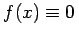
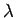
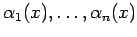

Aus der Theorie linearer Gleichungssysteme ist bekannt, daß (11.7d) genau dann eine eindeutig bestimmte Lösung für  besitzt, wenn die Koeffizientendeterminante nicht verschwindet:
besitzt, wenn die Koeffizientendeterminante nicht verschwindet:
Offenbar ist  nicht identisch gleich Null, denn es gilt . Darüber hinaus gibt es eine Zahl R > 0 mit . Für weitere Untersuchungen sind zwei Fälle zu unterscheiden.
nicht identisch gleich Null, denn es gilt . Darüber hinaus gibt es eine Zahl R > 0 mit . Für weitere Untersuchungen sind zwei Fälle zu unterscheiden.
- 1. :
- Es existiert genau eine Lösung der Integralgleichung, die durch (11.6c) gegeben ist, wobei sich die Koeffizienten als Lösung des Gleichungssystems (11.7d) ergeben. Handelt es sich bei (11.4a) um eine homogene Integralgleichung, d.h. ist , dann ist . Das dann homogene Gleichungssystem (11.7d) hat nur die triviale Lösung . Die homogene Integralgleichung ist nur für erfüllt.
- 2.
 :
:
- Die Koeffizientenmatrix ist ein Polynom höchstens n-ten Grades und hat bekanntlich nicht mehr als n Wurzeln. Für diese Werte von  hat das homogene Gleichungssystem (11.7d) mit außer der trivialen Lösung noch nicht verschwindende Lösungen, so daß auch die homogene Integralgleichung neben der trivialen Lösung noch weitere Lösungen der Form
hat. Aufgrund der linearen Unabhängigkeit der Funktionen  ist  nicht identisch Null. Die Nullstellen von nennt man Eigenwerte der Integralgleichung. Die zugehörigen, nicht identisch verschwindenden Lösungen der homogenen Integralgleichung heißen die Eigenfunktionen zum Eigenwert
nicht identisch Null. Die Nullstellen von nennt man Eigenwerte der Integralgleichung. Die zugehörigen, nicht identisch verschwindenden Lösungen der homogenen Integralgleichung heißen die Eigenfunktionen zum Eigenwert  . Zu einem Eigenwert können mehrere linear unabhängige Eigenfunktionen gehören. Für Integralgleichungen mit allgemeineren Kernen werden darüber hinaus alle diejenigen Zahlen als Eigenwerte bezeichnet, für die die homogene Integralgleichung nichttriviale Lösungen besitzt. In verschiedenen Arbeiten wird mit als charakteristische Zahl und als Eigenwert bezeichnet. Dies resultiert aus der Integralgleichungsform .
. Zu einem Eigenwert können mehrere linear unabhängige Eigenfunktionen gehören. Für Integralgleichungen mit allgemeineren Kernen werden darüber hinaus alle diejenigen Zahlen als Eigenwerte bezeichnet, für die die homogene Integralgleichung nichttriviale Lösungen besitzt. In verschiedenen Arbeiten wird mit als charakteristische Zahl und als Eigenwert bezeichnet. Dies resultiert aus der Integralgleichungsform .